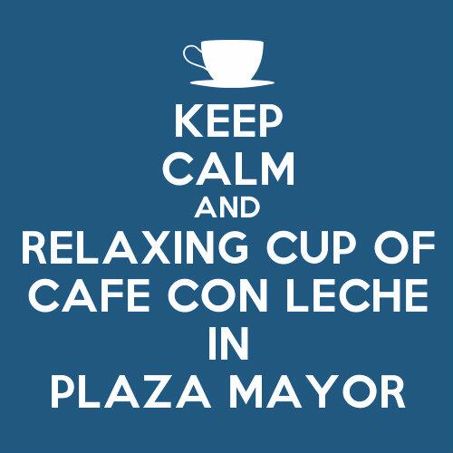
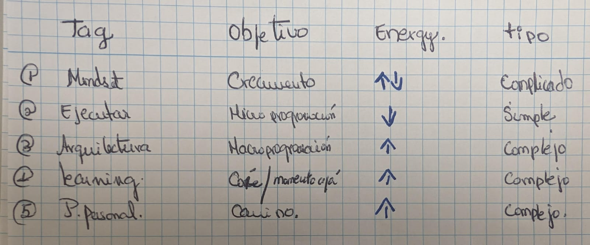

Mindset
Herramientas útiles para llegar al objetivo de este curso
Reconociendo dónde estoy y a dónde quiero llegar
El objetivo principal es entender el problema para usar la herramienta adecuada para su solucion. ejemplo:
¿podemos comer sopa con un tenedor? -Naturalmente por poder se puede, pero ¿es adecuado? obviamente la respuesta es No existe la herramienta cuchara que es la indicada para hacer esta acción.
La misma situacion ocurre a la hora de programar ,enfrentaremos diversas maneras de resolver nuestros problemas y debemos serr capaces de saber elegir que herramienta(de procedimiento) utilizar para el problema que estamos enfrentando.

Leyes básicas para no caer en el pozo…

Keep Calm and walk 1% (reflxiona, no caigas al pozo,identifica,PAVOLANDS)
Planifica tu energia (mucha energia= programa
Media energia = planifica tu dia
poca energia=documeta. )
| Tag | Porpuse | Description | Energy |
|---|---|---|---|
| Mindset | crecer | voy bien , me adaptpo , me ciño al plan | media |
| Ejecutar | microProgramación | Mooc | baja |
| Architec | macroProgramacion | uml ,pages,dominios | alta |
| Learning | Momento ajá | instante que se entiende el problema | alta |
Explicación del uso de energias en Scrum
Analizando las tareas a realizar:
para reconocer lo que nos supondra la ejecución de nuestras diferentes tareas utilizaremos la herramienta métricas
donde vamos a medir según:
Tipologia del problema
Simple : tarea que utiliza poca cantadidad de energía aqui entendemos que podemos ejecutar.
Complicado : tarea que nos implica pensar y gestionar antes de poder ejecutar.
complejo : tarea que require bastantes iteraciones.
Requerimiento de energía
Alta energia: Momento del dia que puedo ser capaz de detectar pavolands o posibles caidas al pozo. Media energia: momento del dia que utilizo para organizar mis rutinas es decir pienso algo que ya existe, solo lo organizo.
Baja energia: momento del dia que no pienso solo ejecuto.

Reconociendo mi ser
- ¿que me hace fallar?
- ¿Cómo funciono yo?
- ¿Cuando estoy mas productiva ?
- ¿Cuál es mi Path?
Ahora bien ya sabemos reconocer el tipo y la cantidad de energia que se necesita para llevar a cabo nuestras tareas , ahora toca reconocernos y eso se logra bajo las 3 preguntas que se encuentran arriba?
{kind=link}
El detallle esta en que nos dejamos llevar por la euforia del momento es decir una persona que no ha corrido una marathon no puede decidir que en 3 dias de entreno va a estar listo para hacerlo.
la ilusion del conocimiento
Manera básica de aprender
Picnic Profundizar Consolidar //poner imagen